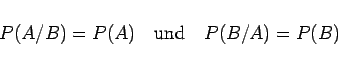
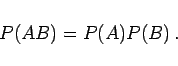

Inhalt Index DeskTop Bronstein

 Wahrscheinlichkeitsrechnung und Mathematische Statistik Wahrscheinlichkeitsrechnung Ereignisse, Häufigkeiten und Wahrscheinlichkeiten Bedingte Wahrscheinlichkeiten, Satz von Bayes
Wahrscheinlichkeitsrechnung und Mathematische Statistik Wahrscheinlichkeitsrechnung Ereignisse, Häufigkeiten und Wahrscheinlichkeiten Bedingte Wahrscheinlichkeiten, Satz von Bayes


Zwei Ereignisse A und B sind unabhängig, wenn für die bedingten Wahrscheinlichkeiten die Beziehungen
|  | (16.41a) |
erfüllt sind. Für sie gilt
|  | (16.41b) |